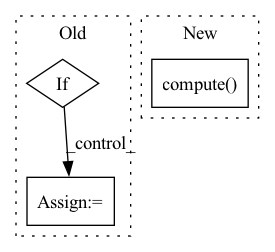

Pattern ID :40713
Before Change
////--------------------------------------------------------------------.
////// Load static tensor into GPU (and expand over the time dimension)
if da_static is not None:
// - Apply scaler
if self.scaler is not None:
da_static = self.scaler.transform(da_static, variable_dim="feature").compute()
// - Expand by only creating a new view on the existing tensor (not allocating new memory)
dim_time = 0 // static has: [node, features]
new_dim_size = [-1 for i in range(len(da_static.shape) + 1)]
new_dim_size[dim_time] = len(input_k)
self.torch_static = torch.tensor(da_static.values, dtype=torch_dtype, device=device).unsqueeze(dim_time).expand(new_dim_size).unsqueeze(0) After Change
da_static = da_static.transpose(*required_static_order)
////----------------------------------------------------------------.
// If da_static still lazy, load data
da_static = da_static.compute()
////----------------------------------------------------------------.
//// Add batch and time dimension and then expand along time dimension
// - Define ways to unsqueeze the static tensor
unsqueeze_time_dim = dim_info["time"] - 1 // (without batch dim ...)In pattern: SUPERPATTERN
Frequency: 4
Non-data size: 3
Instances Fragment ID: 115066159
Project Name: deepsphere/deepsphere-weather
Commit Name: ebca4d34c9f8d3682ca4c7ce4dcf9e5360ffdbb3
Time: 2021-02-11
Author: gionata.ghiggi@gmail.com
File Name: modules/dataloader_autoregressive.py
M Class Name: AutoregressiveDataset
N Class Name: AutoregressiveDataset
M Method Name: __init__(13)
N Method Name: __init__(13)
M Parent Class: Dataset
N Parent Class: Dataset
M File Name: modules/dataloader_autoregressive.py
N File Name: modules/dataloader_autoregressive.py
M Start Line: 128
M End Line: 162
N Start Line: 126
N End Line: 171
Before Change
results = self.metric.compute()
dict_results = {}
for key, value in results.items():
if len(list(value.size())):
dict_results[key] = list(value)
else:
dict_results[key] = float(value)
return dict_results
def get_scores(self, metrics):After Change
def map(self):
Returns the specified metrics
return self.compute()
def map_50(self):
Returns the specified metrics
self.metric.iou_thresholds = [0.5] Fragment ID: 115066162
Project Name: biasvariancelabs/aitlas
Commit Name: 7f03e92a058dc9779f2cdc814712ead34b4c899a
Time: 2023-01-15
Author: ivica.dimitrovski@yahoo.com
File Name: aitlas/base/metrics.py
M Class Name: ObjectDetectionRunningScore
N Class Name: ObjectDetectionRunningScore
M Method Name: map(1)
N Method Name: map(1)
M Parent Class: object
N Parent Class: object
M File Name: aitlas/base/metrics.py
N File Name: aitlas/base/metrics.py
M Start Line: 315
M End Line: 322
N Start Line: 332
N End Line: 332
Before Change
cont_names = ["x", "y"]
boundaries = [[-1, 0, 1], [-4, 100]]
if use_dict:
bucketize_op = ops.Bucketize(
{name: boundary for name, boundary in zip(cont_names, boundaries)}
)
else:
bucketize_op = ops.Bucketize(boundaries, cont_names)
columns_ctx = {}
columns_ctx["continuous"] = {}After Change
bucket_features = cont_names >> bucketize_op
processor = nvtabular.Workflow(bucket_features)
processor.fit(dataset)
new_gdf = processor.transform(dataset).to_ddf().compute()
for col, bs in zip(cont_names, boundaries):
assert np.all(new_gdf[col].values >= 0)
assert np.all(new_gdf[col].values <= len(bs)) Fragment ID: 115066167
Project Name: nvidia/nvtabular
Commit Name: 4c92dffac4354d816178264bcfcdec722db2ec1c
Time: 2021-01-05
Author: github@benfrederickson.com
File Name: tests/unit/test_ops.py
M Class Name: AnonimousClass
N Class Name: AnonimousClass
M Method Name: test_bucketized(5)
N Method Name: test_bucketized(6)
M Parent Class:
N Parent Class:
M File Name: tests/unit/test_ops.py
N File Name: tests/unit/test_ops.py
M Start Line: 1089
M End Line: 1107
N Start Line: 680
N End Line: 692
Before Change
cat_names = ("name-string", "id")
num_buckets = 10
if use_dict:
hashed_cross_op = ops.HashedCross({cat_names: num_buckets})
else:
hashed_cross_op = ops.HashedCross([cat_names], [num_buckets])
After Change
dataset = nvt.Dataset(df)
processor = nvtabular.Workflow(hashed_cross)
processor.fit(dataset)
new_gdf = processor.transform(dataset).to_ddf().compute()
// check sums for determinancy
new_column_name = "_X_".join(cat_names[0])
assert np.all(new_gdf[new_column_name].values >= 0) Fragment ID: 115066166
Project Name: nvidia/nvtabular
Commit Name: 4c92dffac4354d816178264bcfcdec722db2ec1c
Time: 2021-01-05
Author: github@benfrederickson.com
File Name: tests/unit/test_ops.py
M Class Name: AnonimousClass
N Class Name: AnonimousClass
M Method Name: test_hashed_cross(5)
N Method Name: test_hashed_cross(6)
M Parent Class:
N Parent Class:
M File Name: tests/unit/test_ops.py
N File Name: tests/unit/test_ops.py
M Start Line: 1058
M End Line: 1085
N Start Line: 659
N End Line: 674